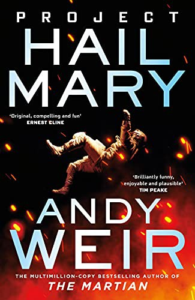

Tus series, al día.
Lo que ves, lees y juegas, en español. Y tus datos, siempre tuyos.
Por dónde vas
Te lo llevas todo cuando quieras. Lo tuyo no depende de nosotros.

Lo que ves, lees y juegas, en español. Y tus datos, siempre tuyos.
Te lo llevas todo cuando quieras. Lo tuyo no depende de nosotros.
